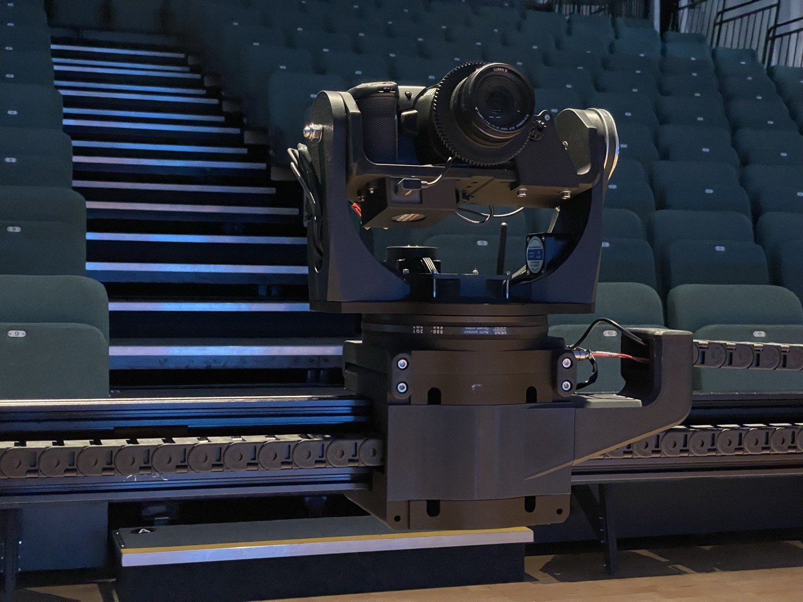
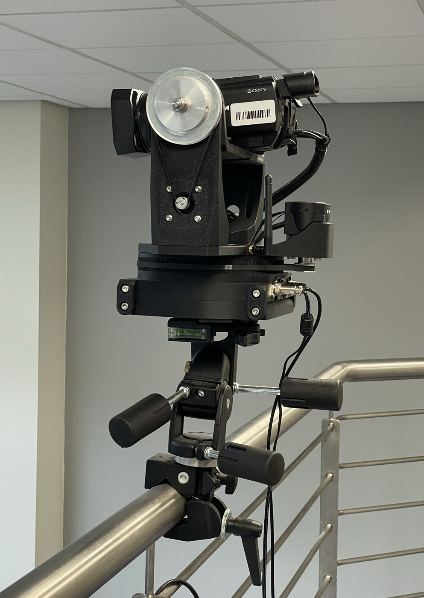
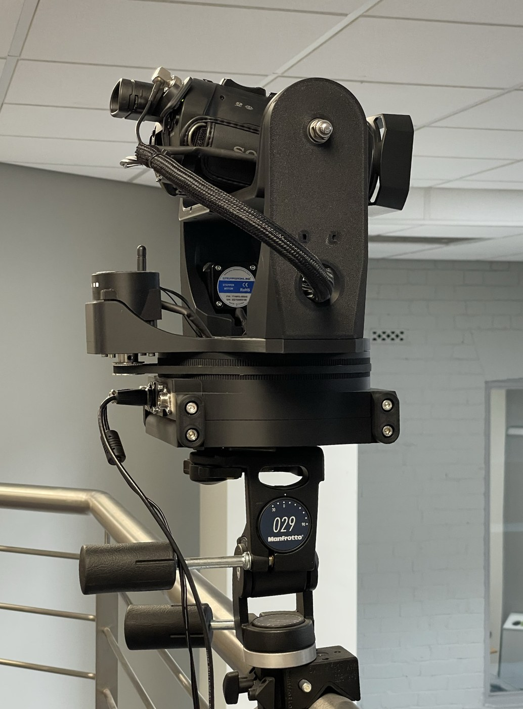
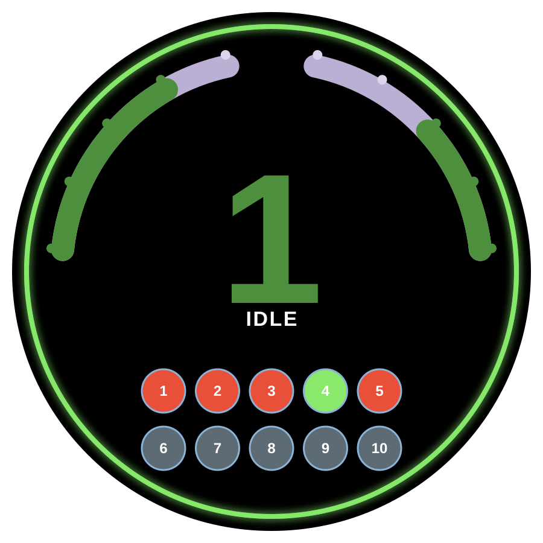
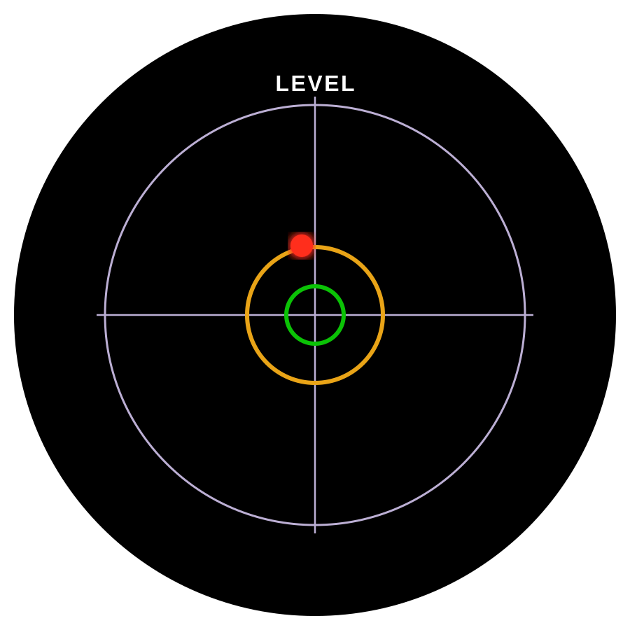
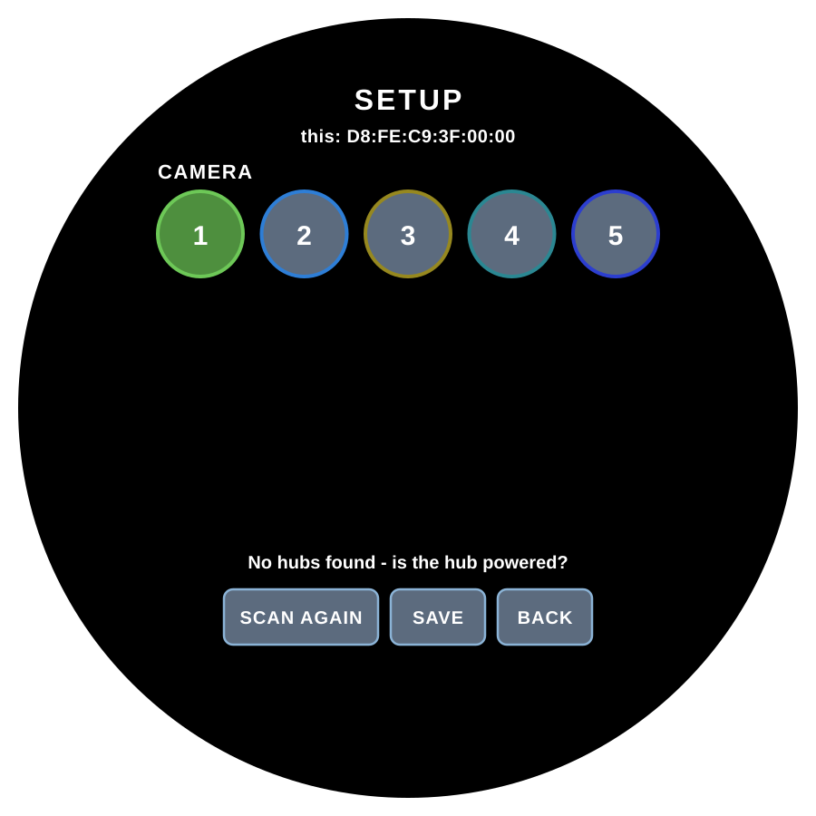

The mounts
The four-axis camera head — its axes, its screen, and how it moves.
Every camera in the rig sits on an identical mount. Each one is a small robot with up to four motorised axes, a motion controller, and a wireless bridge with its own touchscreen.

The four axes
| Axis | Range | Notes |
|---|---|---|
| Pan | Continuous | Rotates left/right. No end stops — see homing below. |
| Tilt | Continuous | Aims up/down. No end stops. |
| Slider | Rail-limited | Travels the camera along a rail. Homes to its end stops. Optional — a mount can be built without one. |
| Zoom | Lens-limited | Either a stepper on the lens ring, or LANC serial zoom on cameras that support it. |
The slider is the one optional axis. Left off, the head becomes a compact pan/tilt/zoom unit that clamps to whatever the venue already has — a balcony rail, a pole, a lighting bar — and everything else works exactly the same:


Motion runs on a Teensy 4.1 at 600 MHz through TMC2209 silent stepper drivers, with smooth jog profiles and expo curves so slow moves stay controllable and fast ones stay smooth. A direction reversal is handled as one continuous ramp rather than a stop and restart.
And what that produces on a real job — a slow slider move across a live performance, straight off the camera:
The mount screen
The bridge board carries a 1.75″ round AMOLED touchscreen. At a glance it shows:
- The camera number and a state ring — its colour tells you the mount's link and activity at a distance.
- The active speed presets and the stored positions.
- A built-in spirit level, using the bridge's onboard IMU, for levelling the head on a stand.
Touch and hold for about 1.5 seconds to open Setup, where the mount is paired to a camera number and a hub (see Pairing & identity).



Homing the axes
The slider and zoom need to know where their travel ends are before stored positions mean anything. This is homing, and it uses StallGuard sensorless load detection built into the TMC2209 drivers — the mount drives the axis gently until it feels the end stop, then zeroes there. No limit switches are fitted or needed.
- Slider and zoom are homed from Config → Homing & Reference in the PC app, or from the hub console.
- Pan and tilt are continuous and are not homed.
How firmly the axis has to push before the mount decides it's hit the end is set by the StallGuard threshold (0 = sensitive, 255 = coarse), tuned per camera in Configuration. The full travel range is measured with Find Limits, also per camera.
Speeds
Each mount holds four speed presets for pan/tilt and four for the slider (plus one for zoom). A preset is a max speed and an acceleration; you pick which preset is active from any controller, and it applies to both jogging and position recalls. Pan/tilt speeds are in degrees per second, slider speeds in millimetres per second. Editing the preset values themselves is done in Configuration.
Next: put those axes to work with stored shots.